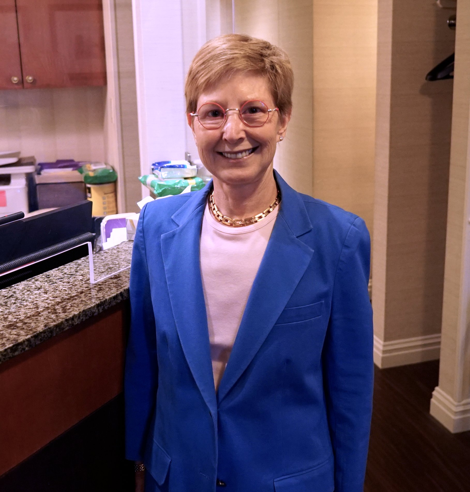

Meet the Physician

"My love for all things 'eyes' stems from a very early experience."
As an infant, Dr. Ronner was diagnosed with both strabismus and amblyopia. Thankfully, she underwent successful patching and surgical treatment. As a result, she visited her ophthalmologist annually — and fell in love with the specialty.
She always wanted to be a doctor, and she attended the Columbia University College of Physicians and Surgeons. After graduation, she was awarded a prestigious residency at The Harkness Eye Institute at Columbia-Presbyterian Medical Center, where she developed her medical and surgical skills under some of the most preeminent ophthalmologists in the world.
After her residency, she was accepted as a Fellow in Pediatric Ophthalmology and Ocular Oncology at the Hospital for Sick Children at the University of Toronto — furthering her training at one of the very finest hospitals specializing in all aspects of pediatrics.
A lifelong New Yorker, Dr. Ronner grew up in Riverdale and attended The Bronx High School of Science. An alumna of Barnard College, she graduated cum laude, majoring in Music History. She plays three instruments — flute, piano, and cello — but her first love has always been ophthalmology.
She has been in practice for over 35 years and continues to love what she does, especially forging lasting relationships with all of her patients, old and new.
Book an Appointment